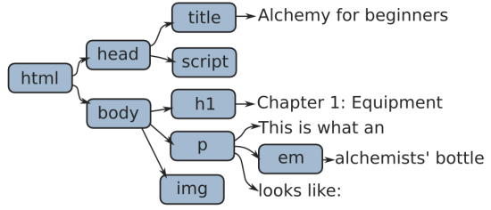

TeX412
(Xe)LaTeX & HTML
Cours 7
adresse web de cette présentation:
??
et du cours:
ktzanev.github.io/tex412lille1
HTML5 + CSS3 + JS5

- HTML5 est un langage à balises, qui fait partie d'une famille de langages dont les autres membres sont XML, SVG, MathML, ...
Son support est un fichier texte avec extensionhtmlet au type MIMEtext/html. - CSS3 est un langage de description de données structurées en arbre.
Son support est un fichier texte avec extensioncsset au type MIMEtext/css. - JS est un langage de programmation à part entière, créé à la base pour rendre dynamique les pages web en les modifiants.
Son support est un fichier texte avec extensionjset au type MIMEapplication/javascript. - SVG est un langage à balises pour décrire des images vectorielles.
Son support est un fichier texte avec extensionsvget au type MIMEimage/svg+xml. Il peut être aussi inclus directement dans une page web avec la balise<svg>.
Histoire (approximative!)
- 1991 : HTML (créé par Tim Berners-Lee)
- 1994 : HTML 2
- 1996 : CSS 1 + JavaScript 1
- 1997 : HTML 4
- 1998 : CSS 2
- 2000 : XHTML 1
- 2002 : Tableless Web Design
- 2005 : AJAX
- 2009 : HTML 5 + CSS 3
- 2010 : JS 5 (qui est en fait 1.8.2 ~ ECMAScript 5)
HTML5
<!DOCTYPE html>
<html lang="fr">
<head>
<meta charset="UTF-8">
<title>Exemple minimal</title>
</head>
<body>
<!-- Un commentaire -->
Bonjour le monde!
</body>
</html>
Comme en LaTeX : plusieurs espaces consecutifs = 1 espace. Et le passage à la ligne = 1 espace.
L'arbre (DOM) d'un document HTML
<!DOCTYPE html>
<html lang="en">
<head>
<title>Alchemy for beginners</title>
<script src="BlackMagic.js"></script>
</head>
<body>
<h1>Chapter 1: Equipment</h1>
<p>This is what an <em>alchemist's bottle</em> looks like:</p>
<img src="StrangeBottle.jpg">
</body>
</html>

Pour visualiser l'arbre DOM : Live DOM Viewer
Comment créer des pages HTML ?
-
Avec un éditeur de texte
- simple : gedit (Linux), Notepad (Windows), TextEdit (Mac)
- performant : Emacs, vi(m), Notepad++, Sublime Text, ...
- spécialisé : Web Storm, Brackets, Atom, LightTable, ...
- Avec un logiciel WYSIWYG dédié (ce n'est plus à la mode) : Adobe Dreamweaver, iWeb, Nvu, KompoZer, ...
- En ligne :
- À partir d'autres langages à balises, comme markdown, textile, LaTeX, ...
- On peut vérifier si le code HTML est correcte dans le validateur de HTML.
Les balises (syntaxe)
-
<balise>...</balise>: balise non-void (peut contenir du texte et/ou d'autres éléments) -
<balise>ou<balise/>: pour une balise void (ne peut pas contenir d'autres éléments) -
<balise attribut>ou<balise attribut="quelque chose">: une balise peut contenir 0, 1 ou plusieurs attributs qui spécifient ou changent son comportement. -
Pas de croisement :
<paul> <thom> </paul> </thom>est interdit. -
Pas d'espace entre
<et le nom de la balise, mais on peut avoir des espaces avant>. Par exemple<paul >est ok. -
Il est souhaitable d'écrire les balises en minuscules, à part pour
<!DOCTYPE>.
Les balises de l'en-tête
-
<meta>(void) permet de renseigner des informations sur le document HTML en fonction des attributs utilisées
Exemple:
<meta charset="UTF-8">
<meta name="keywords" content="LaTeX, XeLaTeX, PDF"> -
<title>(non-void) Le titre de la page HTML
Exemple:<title>Cours 7 (TeX412)</title> -
<link>(void) Définit une relation (inclusion) avec un autre ressource. Utilisé dans 99% des cas pour inclure un fichier CSS (style).
Exemple:<link rel="stylesheet" type="text/css" href="theme.css"> -
<style>(non-void) Pour ecrire le style CSS directement dans le HTML.
Exemple:<style> body {color:red;} </style> -
<script>(non-void) Permet d'inclure ou d'écrire du JavaScript.
Exemple:<script src="MathJax.js"></script>
Balises particulières
<!--...-->commentaire<!DOCTYPE html>première ligne obligatoire pour HTML5<html>-
<head> -
<body>
Balises fondamentales
Balises pour structurer et formater un texte
-
<h1>–<h6>les titres de niveaux 1 à 6 (exemple) -
<p>un paragraphe (exemple) -
<br>passage à la ligne (void) (exemple) -
<hr>ligne horizontale (void) (exemple) -
<b>, <strong>gras (important) (exemple) -
<i>, <em>italique (mise en valeur) (exemple) -
<s>, <del>barré (supprimé) (exemple) -
<u>, <ins>souligné (inséré) (exemple) -
<mark>marqué (exemple) -
<small>petit (exemple) -
<sub>, <sup>indice et exposant (exemple)
Balises pour créer des listes
Balises pour des textes spéciaux
Balises sémantiques
-
<main>partie principale de la page (exemple) -
<article>article -
<section>section -
<aside>à côté -
<menu>manu (peut contenir des<li>) -
<nav>partie contenant plusieurs liens de navigation -
<footer>bas de page, de section, d'article, ... -
<header>en tête de page, de section, d'article, ... -
<adress>adresse -
<time>moment (heure et/ou date)
Balises pour la création des tables
Il ne faut utiliser les tables que pour faire des tables, et non pour la mise en page !
(exemple)<table>table<thead>l'en-tête<tr>ligne d'en-tête<th>titre de colonne<tfoot>le bas de la table<tr>ligne de bas<td>cellule de bas<tbody>corps de la table<tr>ligne de la table<td>cellule avec des données
Pour créer une table vous pouvez utiliser www.tablesgenerator.com. Mais malheureusement ne génère pas
<thead>, <tfoot> et <tbody>.
Les caractères spéciaux
βreprésente le caractère de code 946 en base 10 (β).βreprésente le caractère de code 3B2 en base 16 (β).βreprésente le caractère beta en HTML (β).
&= &<et>= < et >«et»= « et »‐,–et—= ‐, – et — = (espace insécable)€= €©= ©®= ®- ... pour une liste complète voir w3.org